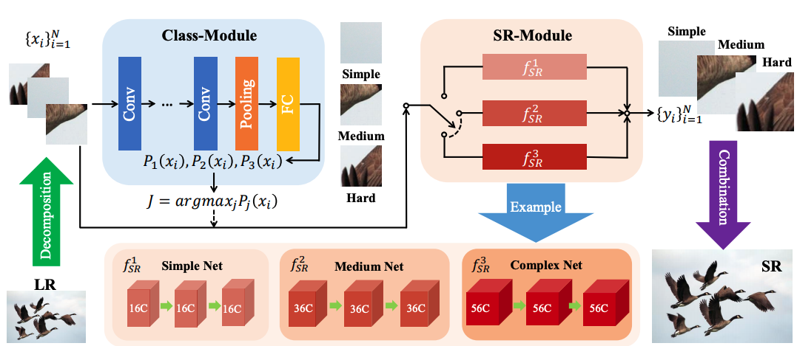
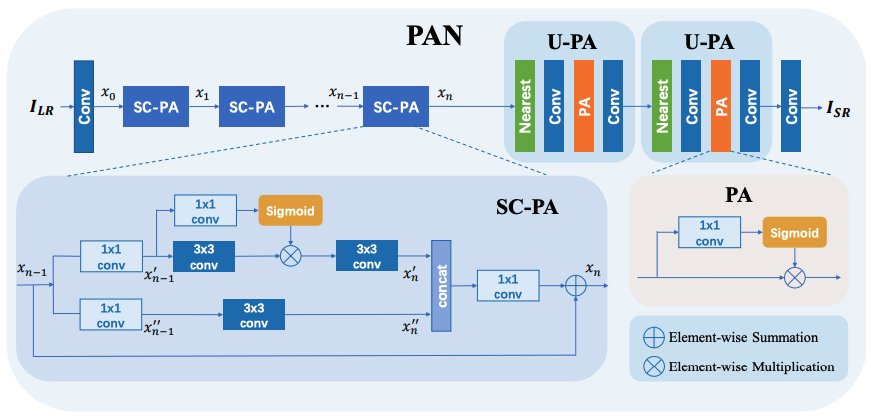
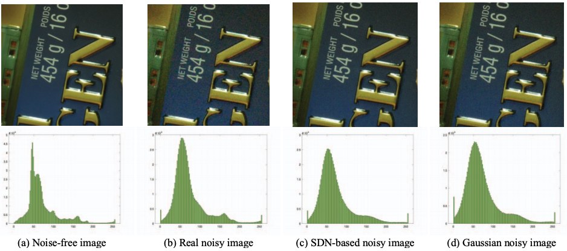
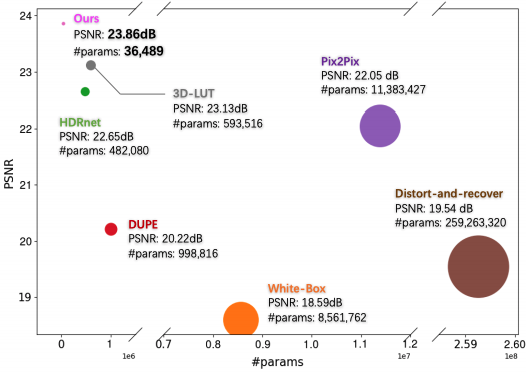

Hengyuan Zhao (赵恒远)
Hengyuan is a research intern at SenseTime Inc., where he works
with Fan Zhang. His work focuses on image denoising in low-light conditions. He previously worked as a
research intern at VIS Baidu Inc., where he focused on restoring old
films or photos using image restoration techniques like super-resolution, denoising, deblurring, and
colorization. At the same time, he was supervised as a research assistant by Chao Dong and Yu Qiao at the XPixel Group at Shenzhen Institutes of Advanced
Technology (SIAT).
Experience
06/2021-10/2021: As a research intern, I joined SenseTime Inc.'s MIG and worked with
Fan Zhang.
12/2020-06/2021: As a research intern, I joined Baidu Inc.'s Vision Technology (VIS)
and worked with Wenhao Wu.
09/2016-06/2020: I was a undergraduate student at Nanjing University of Posts and
Telecommunications, Nanjing, China.
News
- [06/2021] Join SenseTime, work with Fan Zhang.
- [03/2021] One paper accepted by CVPR, 2021.
- [12/2020] Join VIS, Baidu, worked with Wenhao WU.
- [08/2020] One paper accepted by ECCV Workshops, 2020.
- [05/2020] Participate the Efficient Super-Resoluton Challenge of AIM 2020 (ECCV Workshops). We got fourth place and lowest parameters.
- [09/2019] Join MMLAB at SIAT, supervised by Yu Qiao and Chao Dong.
- [08/2019] One paper accepted by ICCV Workshops, 2019.
Publications
Temporally Consistent Video Colorization with Deep Feature Propagation
and Self-regularization Learning
Under review.
 |
Color2Embed: Fast Exemplar-Based Image Colorization using Color
Embeddings
Arxiv.
|
|  |
ClassSR: A General Framework to Accelerate Super-Resolution Networks by
Data Characteristic
Computer Vision and Pattern Recognition (CVPR 2021)
|
|  |
Efficient Image Super-Resolution Using Pixel Attention
European Conference on Computer Vision Workshops (ECCVW 2020)
We got fourth place of Efficient Image Super Resolution Challenge in
total 150 participants. (The lowest paramters, 272K)
|
|  |
A Simple and Robust Deep Convolutional Approach to Blind Image
Denoising
International Conference on Computer Vision Workshops (ICCVW 2019)
|
|  |
Very Lightweight Photo Retouching Network with Conditional Sequential
Modulation
|